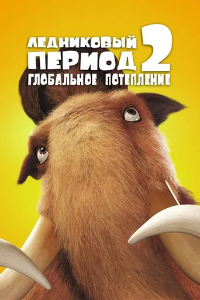

Ледниковый период 2: Глобальное потепление 2006
Саблезубый тигр Диего, мамонт Манфред, грызун Скрэт и ленивец Сид дожили до глобального потепления. С одной стороны, это круто - ледяная пустыня превратилась в настоящий аквапарк, где можно принимать теплые ванны и резвиться под сенью струй. С другой - не очень: стремительный паводок идет прямиком к их родной долине. Теперь ответственным животным придется спасать соседей от потопа, что довольно проблематично - строить ковчег совершенно не из чего, кроме как из талого снега. Но не беспокойтесь - эвакуация разнообразной живности в сухое место пройдет не менее суетливо, смешно и успешно, чем и прошлая операция по возвращению человеческого детеныша в лоно семьи.
Открыть в каталогеДанные и постеры принадлежат их правообладателям. Этот продукт использует TMDB API, но не одобрен и не сертифицирован TMDB.